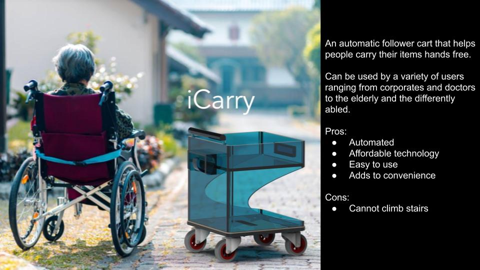
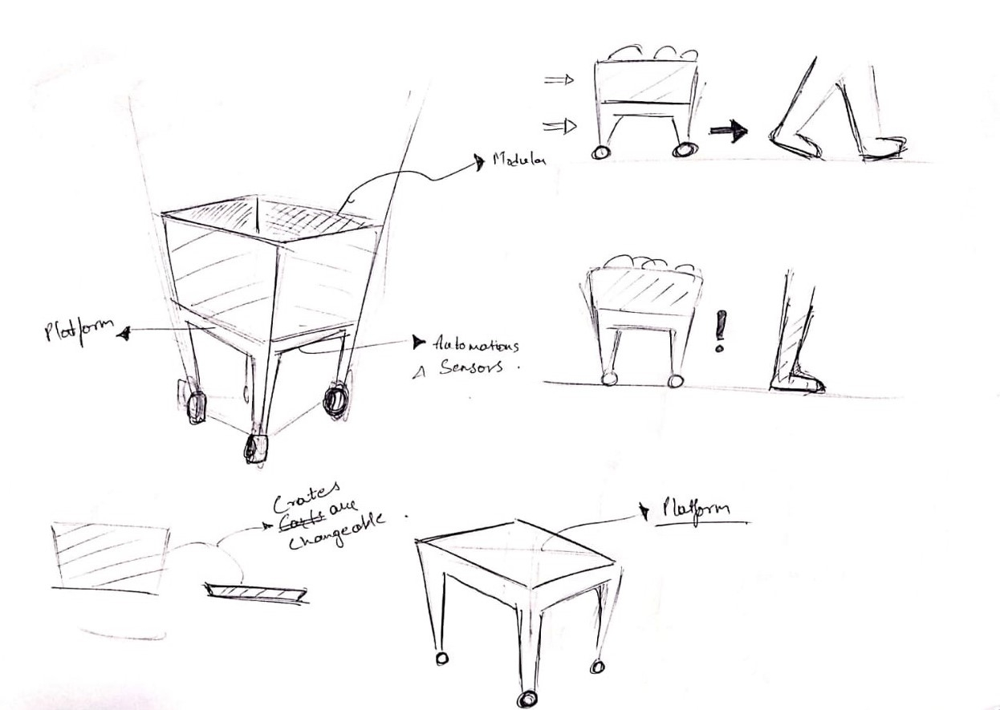
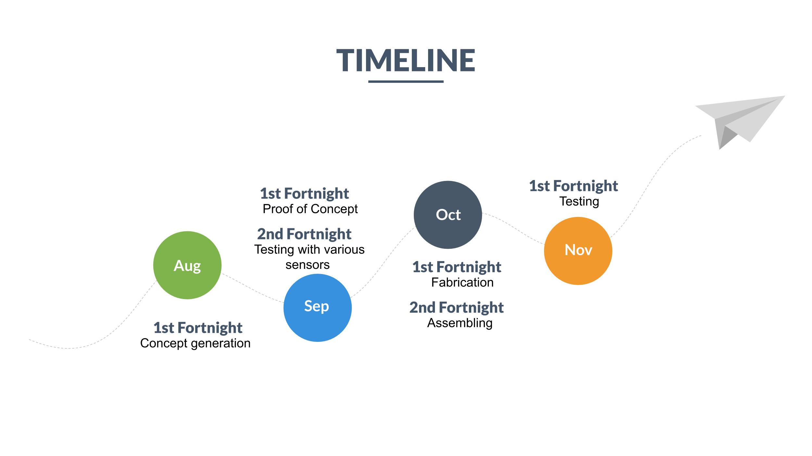

Project Development till Minor Test 1
Slide
Concept Video
References
These are some sources from which we have taken some references for developing this concept video
- Red Hot Chili Peppers - Scar Tissue (Instrumental)
- Dribble.com Gal Shir Link-https://dribbble.com/shots/5329211-Walking
- Dribble.com Lemons (ex-Lemon Digital) Link-https://dribbble.com/shots/4996704-Woman-walks
- Dribble.com Floris de Wit Link-https://dribbble.com/shots/5039546-Moonwalk
- Dribble.com Jonathan Averstedt Link-https://dribbble.com/shots/5915860-Walking-lumberjack-v2
- Steven HWG Link-https://unsplash.com/photos/zBsdRTHIIm4
Follower Assistant Cart(iCarry)
Tejas and I teamed up for the project for this semester. After lots of brainstorming, we ended up deciding to build a follower assistant cart as we wanted to learn some skills and also do something innovative for the society.
What is a iCarry?
The objective is to build a cart/platform that follows the user. The cart will be capable of holding various items for the user. The platform can be modified according to the requirement of the user. Future possibilities also include Bluetooth connectivity with cellphones.

These are the concepts we have prepared as the initial ideation

Who will get benefit from this product?
We aim to make this useful primarily for elderly people, differently-abled, corporate owners, etc. Anyone who wants someone to carry their items along with them can use our product.
Our approach
To develop a successful product, we will be starting concept generation, to decide on the form and functionality of the design. Once complete, we will try and generate the Proof of Concept to reinforce that the design is viable and feasible. After completing the Proof of Concept, we would be exploring the addition/ subtraction of functionality based on what could be beneficial by testing various sensors and actuators on the cart, with the help of Arduino microcontrollers and associated coding.
After finalizing the functions, we will be shifting our focus to developing the form. We will be fabricating the components and chassis using 3D printing, CNC milling and/or other fabrication methods.
Next, we will head to the assembly of the mechanical and electrical components and proceed with the testing. Finally, after thorough testing, we plan to present our design in front of the class and our jury by the end of this semester.
To make things easier to understand, we made a timeline to estimate how we would be proceeding with this design.
Estimated Project Timeline
Challenges
The biggest challenges that we foresee would be to complete the project within the given time. We roughly have about 7 fortnights and due to our lack of experience, we aren't sure whether this time is going to be enough or not. However we are quite positive that we'll be able to finish this project.
The availability of the tools and machines could be another minor obstacle that might delay our operations.
Since Tejas is good with concept generation and electronics skills, and I am not, my knowledge needs to be partly up to date with his for a successful completion of the project in time.
Components we would be using
Below is the list of the items/components we'd be using for our project:
- Navigation sensors- Beacons/ GPS module
- Microcontroller- Arduino
- Battery
- Actuators- Servo/DC Motors
- Chassis components
- Motor driver
- Wiring
Skills required
Below is the list of skills required for our project:
1. CAD Skills
2. Sketching skills
3. Arduino Coding skills
4. Fabrication skills